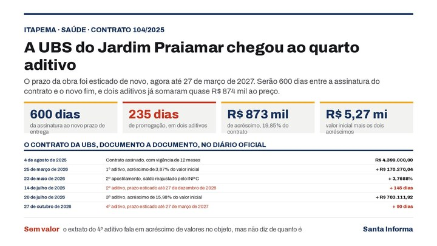

Itapema · SaúdeA UBS do Jardim Praiamar recebeu o quarto aditivo e a entrega foi para março de 2027, 600 dias depois da assinatura do contrato
A outra obra do mesmo bairro, documento a documento.
O Extrato do Contrato nº 210/2026 saiu no Diário Oficial dos Municípios nesta quinta, 29 de outubro. A obra é um CMEI de sistema construtivo modular no Jardim Praia Mar, a contratada é a Metalúrgica Big Farm e o valor global é R$ 17.637.939,42. A vigência é de três meses, contados de 23 de outubro. Fomos atrás da licitação no Diário e montamos a linha do tempo: do edital à homologação foram 57 dias, com uma suspensão no meio.
Em 30 segundos · Modo de Leitura, formato original Santa Informa
Itapema assinou o contrato de uma creche nova.
É um CMEI, Centro Municipal de Educação Infantil.
Fica no Jardim Praia Mar.
O sistema de obra é modular.
O contrato é o nº 210/2026.
O extrato saiu no Diário Oficial dos Municípios.
Nesta quinta, 29 de outubro.
A contratada é a Metalúrgica Big Farm Ltda.
O valor global é R$ 17.637.939,42.
A assinatura foi em 23 de outubro.
A vigência é de três meses.
Pode ser prorrogada, diz o contrato.
A obra veio de uma concorrência eletrônica.
A 03.010.2026, do Processo 143/2026.
O edital saiu em 27 de agosto.
A sessão estava marcada para 11 de setembro.
Em 10 de setembro ela foi suspensa.
O motivo escrito: impugnações ainda em análise.
A republicação saiu em 14 de setembro.
A sessão nova ficou para 28 de setembro.
São 17 dias de diferença.
A homologação saiu em 23 de outubro.
Mesmo dia da assinatura do contrato.
Do edital à homologação: 57 dias.
Contamos data por data no Diário.
O mesmo bairro tem outra obra em curso.
A UBS Porte IV da Rua 458.
Ela custou R$ 4.399.000,00 no começo.
O CMEI é quatro vezes esse valor.
O extrato não diz quantas crianças o CMEI atende.
Não diz quanto o município estimava gastar.
Não diz quantas empresas disputaram.
Itapema usa o modelo de Fila Única.
Foram 8 chamadas em 2026.
Nenhuma diz o tamanho da fila.
A página de licitações do site não lista processo.
Não falamos com a Secretaria de Educação.
Poder PúblicoPublicada em Redação Santa Informa
![Ilustração com o rótulo Itapema, educação, Concorrência 03.010.2026 e o título R$ 17,6 milhões na creche nova do Jardim Praia Mar. Quatro quadros de número trazem R$ 17,6 milhões como valor global do Contrato 210/2026, 23 de outubro como o dia da homologação e da assinatura, três meses de vigência prorrogável e, em vermelho, 17 dias de atraso da sessão depois da suspensão. Abaixo, uma tabela chamada do edital ao contrato, data a data, no Diário Oficial, com cinco linhas: 27 de agosto, edital da concorrência eletrônica, dia 1; 10 de setembro, aviso de suspensão por impugnações em análise, dia 14, em vermelho; 14 de setembro, republicação com sessão remarcada para 28 de setembro, dia 18; 23 de outubro, homologação do Processo 143/2026 e assinatura, dia 57; e 29 de outubro, extrato do Contrato 210/2026 no Diário Oficial, dia 63. No rodapé, 8 chamadas em vermelho ao lado da frase que diz serem as chamadas da Fila Única publicadas em 2026, nenhuma delas com o número de crianças que esperam vaga.](imagens/webp/ilustracao-m347.webp)
A Prefeitura de Itapema publicou nesta quinta-feira, 29 de outubro, no Diário Oficial dos Municípios, o Extrato do Contrato nº 210/2026. O objeto é a construção de um Centro Municipal de Educação Infantil, o CMEI, por sistema construtivo modular, na localidade do Jardim Praia Mar, com fornecimento de todos os materiais, equipamentos e mão de obra. A contratada é a Metalúrgica Big Farm Ltda, CNPJ 90.179.128/0001-57. O valor global é de R$ 17.637.939,42. A vigência é de três meses contados da assinatura, que foi em 23 de outubro, e pode ser prorrogada na forma do artigo 105 da Lei 14.133/2021.
A obra veio da Concorrência Eletrônica nº 03.010.2026, do Processo Licitatório 143/2026. O edital foi publicado em 27 de agosto, assinado pelo secretário municipal de Educação, Valdir Nesi Filho, e marcava a sessão pública para 11 de setembro, às 14h01. Em 10 de setembro, véspera da sessão, a Prefeitura publicou um aviso de suspensão. O motivo escrito no documento é a necessidade de concluir a análise das impugnações apresentadas no certame, que ainda não tinham sido apreciadas. Em 14 de setembro veio a republicação, com a sessão remarcada para 28 de setembro, 17 dias depois da data original. A homologação saiu em 23 de outubro, mesmo dia da assinatura do contrato, e o extrato dela foi publicado em 28 de outubro. Do edital à homologação foram 57 dias, conta nossa.
O Jardim Praia Mar já aparecia no Diário por outra obra. O Contrato nº 104/2025, de agosto do ano passado, é da Unidade Básica de Saúde Porte IV da Rua 458, no mesmo bairro, e custou R$ 4.399.000,00 no início. Nesta mesma quinta-feira ele recebeu o quarto termo aditivo, que empurra a entrega para 27 de março de 2027. O contrato do CMEI é quatro vezes o valor inicial daquele.
O que o extrato não traz é quantas crianças o CMEI vai atender. Itapema trabalha com o modelo de Fila Única e já publicou oito chamadas em 2026, a última em 26 de outubro, com 200 crianças convocadas para a escola particular. Nenhuma delas diz quantas crianças estão esperando vaga na cidade. Em setembro, quando a Justiça mandou Itajaí zerar a fila da creche em oito meses, o buraco de dado em Itapema era o mesmo. Também não achamos o edital no site: a página de licitações da Prefeitura, aberta neste sábado, não lista processo nenhum.
O resumo de 30 segundos está no topo e a versão completa é o texto acima. Aqui ficam as três leituras da casa sobre o mesmo assunto.
Clara, a otimista
Creche nova é daquelas obras que mudam a rotina de uma casa inteira. Mãe que consegue vaga volta a trabalhar, avó que cuidava do neto o dia todo recupera o dia dela, e a criança entra na escola mais cedo. O Jardim Praia Mar é bairro que cresceu depressa, e receber um CMEI ali é reconhecer isso.
Tem um detalhe bom na escolha do sistema modular: ele existe justamente para encurtar canteiro de obra. E tem outro no calendário. O município parou a licitação para responder impugnação, em vez de tocar o certame e resolver depois. Atrasou 17 dias, é verdade, só que processo respondido na hora costuma ser processo que não vira briga na Justiça lá na frente.
Seu Prudêncio, o criterioso
Merece atenção a forma do prazo. O contrato traz vigência de três meses a contar de 23 de outubro, prorrogável, e não um prazo de entrega do prédio. Para obra de R$ 17,6 milhões, vale acompanhar quando aparece o cronograma físico-financeiro, que o extrato cita mas não publica.
O ponto que mais merece cuidado é a falta do valor estimado. O extrato do edital não traz o preço máximo que o município aceitava pagar, e sem ele ninguém consegue dizer se a proposta vencedora ficou abaixo ou acima da previsão. É a informação que transforma um número grande em um número avaliável. Também não sabemos quantas empresas disputaram, o que ajudaria a medir se a concorrência foi disputada de fato.
Uma sugestão útil: publicar junto com a ordem de serviço a capacidade do CMEI, em salas e em crianças por turno. O município já faz isso bem em outros editais, e aqui ajudaria duas vezes, porque permitiria comparar a vaga nova com a fila que a cidade não divulga. Dito isso, o processo foi conduzido com o que a lei pede: edital publicado, impugnação analisada, republicação com data nova e homologação registrada. É um caminho limpo, e dá para acompanhar do começo ao fim só com o Diário Oficial na mão.
Caco, o sarcástico
Creche modular. O nome já entrega que a obra vem em peça, feito aquele móvel de caixa com manual de desenho. Só que esse custa R$ 17,6 milhões e vem sem a chavinha sextavada.
O melhor da história é o suspense. Edital em agosto, sessão marcada para 11 de setembro, e na véspera o aviso: calma, tem impugnação para ler. Dezessete dias depois, tudo de volta ao ar como se nada tivesse acontecido. Deu vontade de saber quem impugnou, o que alegou e no que deu. O documento preferiu o mistério.
Reclamação registrada. Mas tá bom porque é progresso: tem contrato, tem empresa, tem valor e tem data. Agora só falta a Prefeitura contar quantas crianças cabem lá dentro, para a gente saber se a fila diminui ou se vai continuar sendo um número que ninguém publica.
Fontes: O objeto da obra, o sistema construtivo modular, a localidade do Jardim Praia Mar, a contratada Metalúrgica Big Farm Ltda, o valor global de R$ 17.637.939,42, a vigência de três meses e a assinatura em 23 de outubro de 2026 estão no Extrato do Contrato nº 210/2026, publicado pela Prefeitura de Itapema no Diário Oficial dos Municípios de Santa Catarina em 29 de outubro de 2026, edição 5280. O número do processo licitatório, o valor homologado e a data de homologação estão no Extrato de Termo de Homologação do Processo 143/2026, de 28 de outubro de 2026. As datas do edital, a sessão de 11 de setembro e a assinatura do secretário de Educação estão no Edital da Concorrência Eletrônica nº 03.010.2026, de 27 de agosto de 2026. O motivo da parada está no Aviso de Suspensão da Concorrência Eletrônica 03.010.2026, de 10 de setembro de 2026, e a data nova está na republicação do edital, de 14 de setembro de 2026. O valor inicial da UBS Porte IV do mesmo bairro está no Extrato do Contrato nº 104/2025, de 5 de agosto de 2025, e o prazo novo dela está no Extrato do 4º Termo Aditivo, de 29 de outubro de 2026. A contagem de 17, 57 e 63 dias é nossa, feita sobre as datas desses documentos. A ausência do processo na página de licitações foi conferida no site da Prefeitura de Itapema neste sábado, 31 de outubro. As oito chamadas do Fila Única e a última delas estão na nossa matéria de 26 de outubro, e a decisão sobre Itajaí está na nossa matéria de 9 de setembro. Não falamos com a Secretaria Municipal de Educação de Itapema nem com a Metalúrgica Big Farm para esta matéria.

Itapema · SaúdeA outra obra do mesmo bairro, documento a documento.
 Itapema · Educação
Itapema · EducaçãoA fila que a creche nova existe para encurtar.
 Costa Esmeralda · Educação
Costa Esmeralda · EducaçãoO mesmo buraco de dado, no município vizinho.